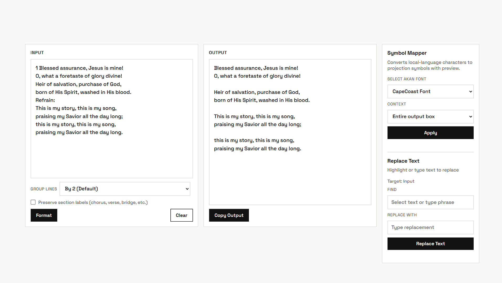

Why I Built This
A simple tool born from a repetitive, time-consuming task.

The Problem
Preparing lyrics for projection is tedious. Copied text comes with
extra spaces, broken formatting, stray symbols, and labels like Chorus
and Verse 1 that don't belong on screen.
Fixing it by hand for every song, before every service is slow and
easy to get wrong.
The Goal
Build a focused formatter that handles this cleanup in seconds while still giving control over line grouping, replacements, and symbol mapping for local-language projection workflows.
Design Principle
Keep the interface minimal and practical: less visual noise, fast actions, clear outputs. Every feature should reduce friction, not add complexity.
Who It Helps
Media teams, projectionists, and anyone who needs clean, readable lyric lines prepared quickly for live use.